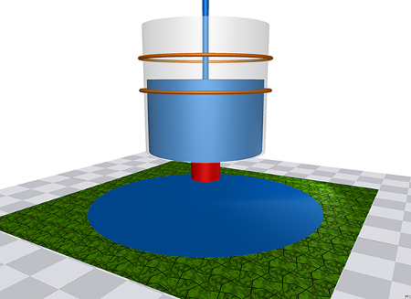
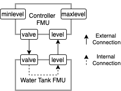
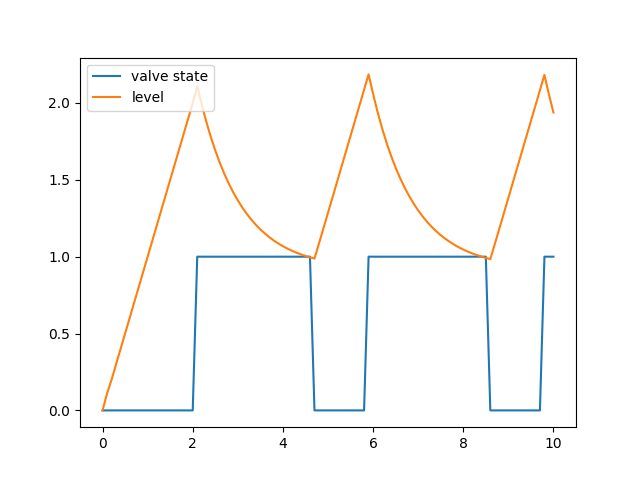

2. Getting Started
This section takes you through a the entire process of conducting a co-simulation with Maestro2.
Note that Maestro2 also features a web API presented in Web Interface (API).
2.1. DEVELOPMENT BRANCH
If you are using the development branch, then the documentation might not be up to date.
However, you can consult the tests webapi_test.py, maestro_cli_test.py and cli_legacy_test.py.
These tests are run by our CI system, so if the build passes, then these are valid.
2.2. Setup
The first step is to install the dependencies along with the tools and resources that are to be used
Download and install Java 11
Download maestro-2.x.x-jar-with-dependencies.jar from the newest Maestro2 2.x.x release on the Maestro release page https://github.com/INTO-CPS-Association/maestro/releases. To easier follow the tutorials below it is recommended to rename the jar file to maestro2.jar, such that the terminal commands can be copy-pasted.
Optional: Python 3 for plotting capabilities
2.3. Example
The example throughout this getting started guide concerns a water tank. The tank (Continuous Time component) has a constant inflow of water and a valve that is controlled by a controller (Discrete-Event component). When the valve is open, the water level within the tank decreases, and whe the valve is closed, the water level increases. The controller determines when to open and close the valve based on a maximum and a minimum water level.

Water Tank Example
This is modelled as two FMUs with external connections, internal connections and parameters as presented in the figure below.

Water Tank FMUs and ports
2.4. Part 1: First MaBL Specification
This part presents a MaBL specification written by hand with descriptive comments.
To follow this part download the getting started part1 resources and unzip into a directory. To easier follow this guide the downloaded jar file can be placed in the same directory as the resources has been unzipped into.
The corresponding MaBL code, including descriptive comments, to execute this co-simulation is presented below:
simulation
import FMI2;
import DataWriter;
import Logger;
import Math;
{
real START_TIME = 0.0;
real END_TIME = 10.0;
real STEP_SIZE = 0.1;
// #############################
// DataWriter for results
// #############################
DataWriter dataWriter = load("DataWriter");
string data_headers[2] = {"{crtl}.crtlInstance.valve","{wt}.wtInstance.level"};
DataWriterConfig dataWriterConfiguration = dataWriter.writeHeader(data_headers);
// #############################
// Load the FMUs and instantiate instances
// #############################
FMI2 tankController = load("FMI2", "{8c4e810f-3df3-4a00-8276-176fa3c9f000}", "watertankcontroller-c.fmu");
FMI2 singleWatertank = load("FMI2", "{cfc65592-9ece-4563-9705-1581b6e7071c}", "singlewatertank-20sim.fmu");
FMI2Component crtlInstance = tankController.instantiate("crtlInstance", false, false);
FMI2Component wtInstance = singleWatertank.instantiate("wtInstance", false, false);
wtInstance.setupExperiment(false, 0.0, START_TIME, true, END_TIME);
crtlInstance.setupExperiment(false, 0.0, START_TIME, true, END_TIME);
// #############################
// Set maximum level and minimum level parameters
// #############################
real crtlParameters[2] = { 2.0 , 1.0 };
uint crtlParameterValRefs[2] = { 0 , 1 };
crtlInstance.setReal(crtlParameterValRefs, 2, crtlParameters);
wtInstance.enterInitializationMode();
crtlInstance.enterInitializationMode();
uint crtlValveStateValRef[1] = { 4 };
bool crtlValveStateOutput[1];
uint crtlLevelInputValRef[1] = { 3 };
real crtlLevelInputValue[1];
uint wtValveStateValRef[1] = { 16 };
real wtValveStateInputs[1];
uint wtLevelValRef[1] = { 17 };
real wtLevelOutputValue[1];
// #############################
// Perform the Initialization:
// 1. Extract valve state from controller
// 2. Convert the valve state from boolean to real
// 3. Set the valve state on the tank
// 4. Extract the level from the tank
// 5. Set the level on the controller
// #############################
crtlInstance.getBoolean(crtlValveStateValRef, 1, crtlValveStateOutput);
real wtValveStateInput;
if( crtlValveStateOutput[0] )
{
wtValveStateInput = 1.0;
}
else
{
wtValveStateInput = 0.0;
}
wtValveStateInputs[0] = wtValveStateInput;
wtInstance.setReal(wtValveStateValRef, 1, wtValveStateInputs);
wtInstance.getReal(wtLevelValRef, 1, wtLevelOutputValue);
crtlInstance.setReal(crtlLevelInputValRef, 1, wtLevelOutputValue);
wtInstance.exitInitializationMode();
crtlInstance.exitInitializationMode();
// #############################
// Get the valve state from the controller
// Get the level from the tank
// Write the valve state and the water level to the results
// #############################
crtlInstance.getBoolean(crtlValveStateValRef, 1, crtlValveStateOutput);
wtInstance.getReal(wtLevelValRef, 1, wtLevelOutputValue);
dataWriter.writeDataPoint(dataWriterConfiguration, START_TIME, crtlValveStateOutput[0], wtLevelOutputValue[0]);
real time = START_TIME;
// #############################
// Simulation Loop until END_TIME
// #############################
while(time + STEP_SIZE <= END_TIME)
{
// #############################
// Convert valve state from boolean to real
// #############################
if( crtlValveStateOutput[0] )
{
wtValveStateInput = 1.0;
}
else
{
wtValveStateInput = 0.0;
}
// #############################
// Set the valve state on the tank
// Set the level on the controller
// #############################
wtValveStateInputs[0] = wtValveStateInput;
wtInstance.setReal(wtValveStateValRef, 1, wtValveStateInputs);
crtlInstance.setReal(crtlLevelInputValRef, 1, wtLevelOutputValue);
// #############################
// Step the tank
// Step the controller
// #############################
wtInstance.doStep(time, STEP_SIZE, true);
crtlInstance.doStep(time, STEP_SIZE, true);
// #############################
// Get the valve state from the controller
// Get the level from the tank
// #############################
crtlInstance.getBoolean(crtlValveStateValRef, 1, crtlValveStateOutput);
wtInstance.getReal(wtLevelValRef, 1, wtLevelOutputValue);
// #############################
// Increase the time with STEP_SIZE
// Write the valve state and the water level to the results
// #############################
time = time + STEP_SIZE;
dataWriter.writeDataPoint(dataWriterConfiguration, time, crtlValveStateOutput[0], wtLevelOutputValue[0]);
}
// #############################
// Clean up
// #############################
dataWriter.close();
wtInstance.terminate();
crtlInstance.terminate();
tankController.freeInstance(crtlInstance);
singleWatertank.freeInstance(wtInstance);
unload(tankController);
unload(singleWatertank);
unload(dataWriter);
}
To execute this (one can use the file corresponding wt-example.mabl from the unzipped example resouces) run the following command from the terminal:
java -jar maestro2.jar --interpret wt-example.mabl
Where --interpret is to interpret a specification
The result is available in outputs.csv. This can be plotted with python part1pythoncsvplotter.py, and the result should look like the figure below.

Result from co-simulation
2.5. Part 2: Specification Generation and Expansion
This part also concerns the water tank but uses the capabilities of specification generation and expansion to create the specification. Thus, the user does not have to write MaBL by hand. Specification generation and Expansion are not treated in detail in this guide, but more information is available in Specification Generator and Expansion.
To follow this part download the getting started part2 resources and unzip into a directory. To easier follow this guide the downloaded jar file can be placed in the same directory as the resources has been unzipped into.
The specification generator is based on JSON configuration files with the same structure as the ones used in Maestro1. For this reason, it is also possible to use the INTO-CPS Application to create the specification files. These files are available in the folder of the given Multi-Model. This is also mentioned below where the actual terminal command is issued.
2.5.1. Configuration file
The content of the configuration file is briefly described after the example below. A more detailed description is available at Legacy Configuration / INTO-CPS Multi-model and coe config File Format. The configuration for this example is:
{
"fmus": {
"{crtl}": "watertankcontroller-c.fmu",
"{wt}": "singlewatertank-20sim.fmu"
},
"connections": {
"{crtl}.crtlInstance.valve": [
"{wt}.wtInstance.valvecontrol"
],
"{wt}.wtInstance.level": [
"{crtl}.crtlInstance.level"
]
},
"parameters": {
"{crtl}.crtlInstance.maxlevel": 2,
"{crtl}.crtlInstance.minlevel": 1
},
"algorithm": {
"type": "fixed-step",
"size": 0.1
},
"endTime": 10
}
fmuscontains mappings between a key, enclosed in{}and the corresponding FMU.connectionscontains mappings from a single FMU output port to one or more FMU input ports. The format of a port is{fmuKey}.instance.scalarVariableNameparameterscontains mappings from a single FMU parameter port and a value.algorithmdescribes that the fixed-step algorithm should be used with the size 0.001. Currently only fixed-step is supported.end_timeis the end-time of the simulation
2.5.2. Specification Generation
The command below generates the specification based on the configuration file above:
java -jar maestro2.jar --spec-generate1 wt-example-config.json --dump-simple "./"
Where --spec-generate1 instructs Maestro2 to use specification generator for legacy configuration files (i.e. configuration files for maestro1) and --dump-simple describes to dump the final specification at the current directory.
Note
The INTO-CPS Application creates two configuration files in JSON format: a multimodel configuration file and a simulate configuration file. These files can both be added to the terminal command, i.e. --spec-generate1 multimodel.json simulate.json, and will be merged by Maestro. Thus, one does not have to merge these files manually.
2.5.3. Final specification and Execution
The final specification is in the file spec.mabl and is not presented here but can be downloaded: spec.mabl.
Furthermore, a spec.runtime.json file has been produced with information for the runtime DataWriter CSV plugin with information on where to store the csv result:
{
"DataWriter" : [ {
"filename" : "outputs.csv",
"type" : "CSV"
} ]
}
2.5.4. Execution
To execute the specification execute the following command:
java -jar maestro2.jar interpret spec.mabl -runtime spec.runtime.json
The interpret subcommand executes the specification using the supplied
runtime configuration.
Pass the runtime file explicitly with -runtime; the current subcommand
does not automatically discover *.runtime.json files beside the JAR.
For runtime environment variables, see Execution Environment Component (MEnv).
Similar to above in Part 1: First MaBL Specification, the results can be viewed and plotted with the accompanying python script: python part2pythoncsvplotter.py
2.5.5. Extra: Expansion
This section gives a small insight into the expansion feature of Maestro. It is possible to use expansion plugins within in a MaBL specification. When Maestro encounters a MaBL expand statement during processing, it will replace the statement with MaBL code generated by the related expansion plugin. This happens automatically in the part2 example, but it can be made obvious.
Run the command below:
java -jar maestro2.jar --spec-generate1 wt-example-config.json --dump-intermediate "./part2mabl-intermediate"
--dump-intermediate describes to dump the specification after every expansion iteration at “./part2mabl-intermediate”The directory part2mabl-intermediate now contains files with different numbers in increasing order due to the flag --dump-intermediate "./part2mabl-intermediate".
The initial specification, spec00000.mabl, refers to the specification generated by the specification generator without any expansions carried out. spec00001.mabl is the specification after 1 expansion has been carried out and so forth. The larget number referes to the specification after all expansions has been carried out.
spec00000.mabl is the specification generated by the specification generator which contains several annotations (marked with @) and two expand statements (begins with: expand): initialize and fixedStep.
The reason for these annotations are that the file is self-contained. The relevant information to generate the final specification is added to the specifications via these annotations. See the example below and the description afterwards:
1simulation
2import FixedStep;
3import Initializer;
4import DebugLogging;
5import TypeConverter;
6import DataWriter;
7import FMI2;
8import Math;
9import ArrayUtil;
10import Logger;
11import BooleanLogic;
12@Framework( "FMI2");
13@FrameworkConfig( "FMI2", "{\"fmus\":{\"{crtl}\":\"watertankcontroller-c.fmu\",\"{wt}\":\"singlewatertank-20sim.fmu\"},\"connections\":{\"{crtl}.crtlInstance.valve\":[\"{wt}.wtInstance.valvecontrol\"],\"{wt}.wtInstance.level\":[\"{crtl}.crtlInstance.level\"]},\"parameters\":{\"{crtl}.crtlInstance.maxlevel\":2,\"{crtl}.crtlInstance.minlevel\":1},\"startTime\":0.0,\"endTime\":10.0,\"loggingOn\":false,\"visible\":false,\"algorithm\":{\"type\":\"fixed-step\",\"size\":0.1}}");
14{
15 bool global_execution_continue = true;
16 int FMI_STATUS_OK = 0;
17 int FMI_STATUS_WARNING = 1;
18 int FMI_STATUS_DISCARD = 2;
19 int FMI_STATUS_ERROR = 3;
20 int FMI_STATUS_FATAL = 4;
21 int FMI_STATUS_PENDING = 5;
22 int status = 0;
23 Math math = load("Math");
24 Logger logger = load("Logger");
25 DataWriter dataWriter = load("DataWriter");
26 BooleanLogic booleanLogic = load("BooleanLogic");
27 FMI2 crtl = load("FMI2", "{8c4e810f-3df3-4a00-8276-176fa3c9f000}", "/C:/Users/frdrk/AppData/Local/Temp/tmplaq3m7sj/watertankcontroller-c.fmu");
28 if( (crtl == null) )
29 {
30 global_execution_continue = false;
31 }
32 FMI2 wt = load("FMI2", "{cfc65592-9ece-4563-9705-1581b6e7071c}", "/C:/Users/frdrk/AppData/Local/Temp/tmplaq3m7sj/singlewatertank-20sim.fmu");
33 if( (wt == null) )
34 {
35 global_execution_continue = false;
36 }
37 @map wtInstance -> "wtInstance";
38 FMI2Component wtInstance = null;
39 if( (global_execution_continue) )
40 {
41 wtInstance = wt.instantiate("wtInstance", false, false);
42 if( (wtInstance == null) )
43 {
44 global_execution_continue = false;
45 }
46 }
47 @map crtlInstance -> "crtlInstance";
48 FMI2Component crtlInstance = null;
49 if( (global_execution_continue) )
50 {
51 crtlInstance = crtl.instantiate("crtlInstance", false, false);
52 if( (crtlInstance == null) )
53 {
54 global_execution_continue = false;
55 }
56 }
57 FMI2Component components[2] = { wtInstance , crtlInstance };
58 real START_TIME = 0.0;
59 real STEP_SIZE = 0.1;
60 real END_TIME = 10.0;
61 @Config("{\"parameters\":{\"{crtl}.crtlInstance.maxlevel\":2,\"{crtl}.crtlInstance.minlevel\":1}}");
62 Initializer.expand initialize(components, START_TIME, END_TIME);
63 FixedStep.expand fixedStep(components, STEP_SIZE, START_TIME, END_TIME);
64 wt.freeInstance(wtInstance);
65 crtl.freeInstance(crtlInstance);
66 unload(crtl);
67 unload(wt);
68 unload(math);
69 unload(logger);
70 unload(dataWriter);
71 unload(booleanLogic);
72}
Line 12-13 describes the framework and the JSON necessary to generate the configuration of the framework context, which is needed by the expansion plugins.
Line 61 describes a configuration used specifically for the
initializeexpansion plugin on the subsequent lineLine 62 specifies that the initialize expansion plugin should be expanded.
Line 63 specifies that the fixedStep expansion plugin should be expanded.
The next example presents the intermediate expansion spec00002.mabl generated after the expansion of line 61 and 62 in spec00000.mabl containing @Config(...) and Initializer.expand initialize(...) respectively.
Thus the @Config(...) and Initializer.expand initialize(...) have been replaced with the MaBL generated by the corresponding Initialize plugin as seen on line 61 to 158.
As it can be seen on line 159, FixedStep.expand fixedStep(...) has not been expanded yet.
1simulation
2import FixedStep;
3import Initializer;
4import DebugLogging;
5import TypeConverter;
6import DataWriter;
7import FMI2;
8import Math;
9import ArrayUtil;
10import Logger;
11import BooleanLogic;
12@Framework( "FMI2");
13@FrameworkConfig( "FMI2", "{\"fmus\":{\"{crtl}\":\"watertankcontroller-c.fmu\",\"{wt}\":\"singlewatertank-20sim.fmu\"},\"connections\":{\"{crtl}.crtlInstance.valve\":[\"{wt}.wtInstance.valvecontrol\"],\"{wt}.wtInstance.level\":[\"{crtl}.crtlInstance.level\"]},\"parameters\":{\"{crtl}.crtlInstance.maxlevel\":2,\"{crtl}.crtlInstance.minlevel\":1},\"startTime\":0.0,\"endTime\":10.0,\"loggingOn\":false,\"visible\":false,\"algorithm\":{\"type\":\"fixed-step\",\"size\":0.1}}");
14{
15 bool global_execution_continue = true;
16 int FMI_STATUS_OK = 0;
17 int FMI_STATUS_WARNING = 1;
18 int FMI_STATUS_DISCARD = 2;
19 int FMI_STATUS_ERROR = 3;
20 int FMI_STATUS_FATAL = 4;
21 int FMI_STATUS_PENDING = 5;
22 int status = 0;
23 Math math = load("Math");
24 Logger logger = load("Logger");
25 DataWriter dataWriter = load("DataWriter");
26 BooleanLogic booleanLogic = load("BooleanLogic");
27 FMI2 crtl = load("FMI2", "{8c4e810f-3df3-4a00-8276-176fa3c9f000}", "/C:/Users/frdrk/AppData/Local/Temp/tmplaq3m7sj/watertankcontroller-c.fmu");
28 if( (crtl == null) )
29 {
30 global_execution_continue = false;
31 }
32 FMI2 wt = load("FMI2", "{cfc65592-9ece-4563-9705-1581b6e7071c}", "/C:/Users/frdrk/AppData/Local/Temp/tmplaq3m7sj/singlewatertank-20sim.fmu");
33 if( (wt == null) )
34 {
35 global_execution_continue = false;
36 }
37 @map wtInstance -> "wtInstance";
38 FMI2Component wtInstance = null;
39 if( (global_execution_continue) )
40 {
41 wtInstance = wt.instantiate("wtInstance", false, false);
42 if( (wtInstance == null) )
43 {
44 global_execution_continue = false;
45 }
46 }
47 @map crtlInstance -> "crtlInstance";
48 FMI2Component crtlInstance = null;
49 if( (global_execution_continue) )
50 {
51 crtlInstance = crtl.instantiate("crtlInstance", false, false);
52 if( (crtlInstance == null) )
53 {
54 global_execution_continue = false;
55 }
56 }
57 FMI2Component components[2] = { wtInstance , crtlInstance };
58 real START_TIME = 0.0;
59 real STEP_SIZE = 0.1;
60 real END_TIME = 10.0;
61 while( global_execution_continue )
62 {
63 int status = 0;
64 status = wtInstance.setupExperiment(false, 0.0, START_TIME, true, END_TIME);
65 if( status == 3 || status == 4 )
66 {
67 logger.log(4, "Setup Experiment Failed: %d", status);
68 global_execution_continue = false;
69 break;
70 }
71 status = crtlInstance.setupExperiment(false, 0.0, START_TIME, true, END_TIME);
72 if( status == 3 || status == 4 )
73 {
74 logger.log(4, "Setup Experiment Failed: %d", status);
75 global_execution_continue = false;
76 break;
77 }
78 real realValueSize7[7] = { 9.0 , 1.0 , 1.0 , 9.81 , 1.0 , 0.0 , 0.0 };
79 uint valRefsSize7[7] = { 0 , 1 , 2 , 3 , 4 , 5 , 6 };
80 status = wtInstance.setReal(valRefsSize7, 7, realValueSize7);
81 if( status == 3 || status == 4 )
82 {
83 logger.log(4, "set failed %d", status);
84 global_execution_continue = false;
85 break;
86 }
87 real realValueSize2[2] = { 2.0 , 1.0 };
88 uint valRefsSize2[2] = { 0 , 1 };
89 status = crtlInstance.setReal(valRefsSize2, 2, realValueSize2);
90 if( status == 3 || status == 4 )
91 {
92 logger.log(4, "set failed %d", status);
93 global_execution_continue = false;
94 break;
95 }
96 status = wtInstance.enterInitializationMode();
97 status = crtlInstance.enterInitializationMode();
98 real realValueSize1[1] = { 0.0 };
99 uint valRefsSize1[1] = { 16 };
100 status = wtInstance.setReal(valRefsSize1, 1, realValueSize1);
101 if( status == 3 || status == 4 )
102 {
103 logger.log(4, "set failed %d", status);
104 global_execution_continue = false;
105 break;
106 }
107 realValueSize1[0] = 1.0;
108 valRefsSize1[0] = 3;
109 status = crtlInstance.setReal(valRefsSize1, 1, realValueSize1);
110 if( status == 3 || status == 4 )
111 {
112 logger.log(4, "set failed %d", status);
113 global_execution_continue = false;
114 break;
115 }
116 bool BooleanValueSize1[1];
117 valRefsSize1[0] = 4;
118 status = crtlInstance.getBoolean(valRefsSize1, 1, BooleanValueSize1);
119 if( status == 3 || status == 4 )
120 {
121 logger.log(4, "get failed %d", status);
122 global_execution_continue = false;
123 break;
124 }
125 bool crtlInstanceSvValRef4 = BooleanValueSize1[0];
126 real wtInstanceSvValRef16Real;
127 TypeConverter.expand convertBoolean2Real(crtlInstanceSvValRef4, wtInstanceSvValRef16Real);
128 realValueSize1[0] = wtInstanceSvValRef16Real;
129 valRefsSize1[0] = 16;
130 status = wtInstance.setReal(valRefsSize1, 1, realValueSize1);
131 if( status == 3 || status == 4 )
132 {
133 logger.log(4, "set failed %d", status);
134 global_execution_continue = false;
135 break;
136 }
137 valRefsSize1[0] = 17;
138 status = wtInstance.getReal(valRefsSize1, 1, realValueSize1);
139 if( status == 3 || status == 4 )
140 {
141 logger.log(4, "get failed %d", status);
142 global_execution_continue = false;
143 break;
144 }
145 real wtInstanceSvValRef17 = realValueSize1[0];
146 realValueSize1[0] = wtInstanceSvValRef17;
147 valRefsSize1[0] = 3;
148 status = crtlInstance.setReal(valRefsSize1, 1, realValueSize1);
149 if( status == 3 || status == 4 )
150 {
151 logger.log(4, "set failed %d", status);
152 global_execution_continue = false;
153 break;
154 }
155 status = wtInstance.exitInitializationMode();
156 status = crtlInstance.exitInitializationMode();
157 break;
158 }
159 FixedStep.expand fixedStep(components, STEP_SIZE, START_TIME, END_TIME);
160 wt.freeInstance(wtInstance);
161 crtl.freeInstance(crtlInstance);
162 unload(crtl);
163 unload(wt);
164 unload(math);
165 unload(logger);
166 unload(dataWriter);
167 unload(booleanLogic);
168}